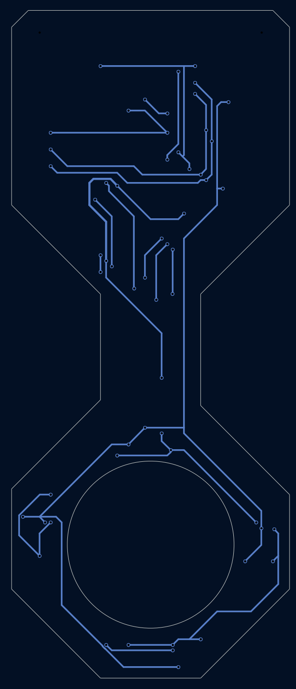

A magnetometer array that wraps around an optical cavity
Quantum optics experiments are sensitive to stray magnetic fields. Dr. Elliott's lab needed to know the field at the exact spot where its optical cavity sits, inside a vacuum chamber, so it could be measured and cancelled. I designed the boards, firmware, and logging software to do that.
- 83-axis sensors on 2 boards
- 0.0625 mGresolution per count
- ~10 Hzfull-array update rate
- 2 layers50 × 120 mm FR4, KiCad
You can't put a sensor where the experiment is
The spot that matters is the center of the cavity, and a sensor can't sit there. So the board has a circular cutout that slides over the cavity, with four sensors at the 12, 3, 6, and 9 o'clock positions. Averaging their readings estimates the field at the center. A second identical board, mounted further along the cavity, adds four more sample points.
That averaged field is what the lab watches and drives toward zero with cancellation coils.

Four choices that shaped the board
I²C over SPI
SPI is 25 times faster on paper, but each sensor takes about 2 ms to convert a reading no matter how fast the bus is. Speed wasn't the bottleneck. SPI would have needed 36 traces for eight sensors; I²C needs two shared lines.
A multiplexer, because every sensor has the same address
The MMC5983MA has a fixed I²C address (0x30), so eight of them on one bus would collide. A TI TCA9546A switch on each board isolates one sensor at a time. The two boards' switches get different addresses (0x70 and 0x71), which gives every sensor a unique path.


The right capacitor for the regulator
The LM3940 regulator needs a 33 µF output capacitor with ESR between 0.3 and 22 Ω to stay stable. A ceramic cap has too little ESR and makes it oscillate, so the board uses tantalum.
Keeping the board itself from becoming noise
The hourglass shape is the noise strategy. Everything that carries real current sits in the top section, and only the eight signal traces cross the narrow neck to the sensors. Near the sensors there are only ceramic capacitors, with no inductors or ferrite, and the board mounts with brass or nylon hardware.


From raw counts to a center-field reading
The firmware cycles through all eight sensors about ten times a second: select the channel, trigger a measurement, wait for the conversion, read 18 bits per axis, and convert to gauss. Zero field sits at count 131,072, and 16,384 counts equal one gauss.
// convert 18-bit raw counts to gauss
Bx = ((float)rx - 131072UL) / 16384.0f;
By = ((float)ry - 131072UL) / 16384.0f;
Bz = ((float)rz - 131072UL) / 16384.0f;Each sensor also has an on-chip SET/RESET coil. Taking a reading after each pulse and subtracting cancels the sensor's temperature-dependent offset, which matters on long runs. A Python logger records timestamped CSV data and flags any sensor that stops reporting.

Lessons for revision two
Both boards came from one set of Gerber files to keep fabrication simple. That meant both multiplexers shipped with the same address, and one board had to be reworked by hand. A three-pad solder jumper would let each board pick its address.
I'd also wire the sensors' interrupt pin so the firmware stops polling, and add temperature tracking for long acquisitions. The design scales to eight boards (32 sensors) on one bus before the multiplexer runs out of addresses.
I came into this with no PCB experience. The part I'm proudest of is the 32-page reference manual, written so the next student can bring the system up from an unpowered board without asking me anything.